Any initial discussion of scales inevitably centers around these two seven-tone scales employed in the composition of Common Practice music.
The most common scale pattern used is the Major ScaleA heptatonic (“seven-tone”) scale consisting of the following arrangement: W-W-H-W-W-W-H.. It is an arrangement of whole and half steps as follows:
| ˆ | ˆ | ˆ | ˆ | ˆ | ˆ | ˆ | ˆ | |||||||
| 1 | 2 | 3 | 4 | 5 | 6 | 7 | 8 | |||||||
| W | W | H | W | W | W | H |
Note that half steps occur between scale degrees 3–4 and 7–8. This is shown in pitches and the keyboard in Figure 3.2 "Major Scale, Keyboard and Pitches".
Figure 3.2 Major Scale, Keyboard and Pitches
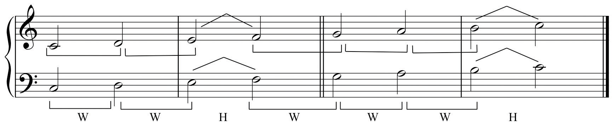This arrangement of whole steps and half steps is maintained for any major scale on any given starting pitch. Accidentals are used to modify pitches in order to retain this same arrangement of whole and half steps. Compare the samples below to the keyboard diagram. Observe the placement of whole and half steps on the keyboard that maintain the proper ordering.
Figure 3.3 Other Examples of Major Scales
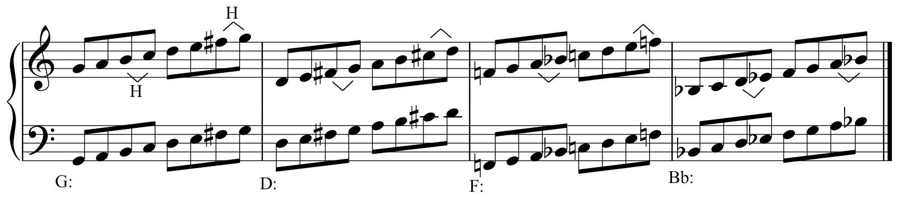Observe that in each new octave species, some chromatic alteration is required in order to retain the same arrangement of scale steps.
An alternate view of major scale construction is an examination of its constituent tetrachords (from the Greek: “four tones”). Observe that the arrangement of whole and half steps in the first tetrachord are identical to that of the second tetrachord. Both tetrachords are W-W-H separated by a whole step.
So, two mnemonics are suitable for remembering Major scale construction:
The keyboard diagram is another essential tool for familiarization and recognition of major scales. The visual reinforcement of whole step and half step placement will hasten the learning process.
The individual scale steps have specific labels. These terms have come into general use, having their origins in early 18th-century theoryFrench composer and theorist Jean Phillipe Rameau employs versions of these terms in his seminal work Traité de l’harmonie (1728). Our current usage of these terms is adapted from this work. Figure 3.4 "Scale-step Labels" shows the major scale and its accompanying scale step labels.
Figure 3.4 Scale-step Labels
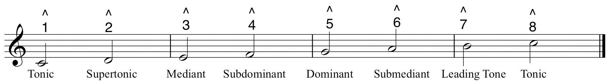Figure 3.5 Scale-steps in Order of Importance
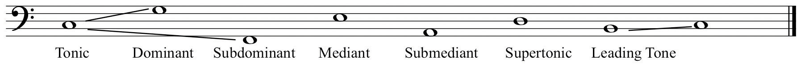The other heptatonic scale used in Common Practice music is called the Minor ScaleA heptatonic scale having three distinct forms, Natural, Harmonic, and Melodic Minor.. It is arranged as follows:
| ˆ | ˆ | ˆ | ˆ | ˆ | ˆ | ˆ | ˆ | |||||||
| 1 | 2 | 3 | 4 | 5 | 6 | 7 | 8 | |||||||
| W | H | W | W | H | W | W |
Figure 3.6 The Minor Scale
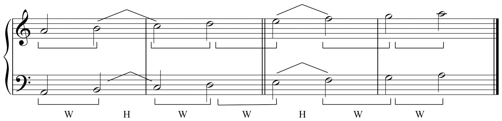For this example, the pitches are identical to the Major scale example above, re-arranged from scale degree six. Figure 3.7 "Minor Scales on a; on c; Major Scale on C" shows the same Minor scale pattern, but constructed from the same starting pitch. Both are then compared to the Major scale.
Figure 3.7 Minor Scales on a; on c; Major Scale on C
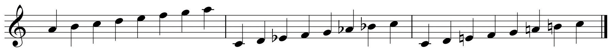As with major scales, minor scales use accidentals to retain the same “shape” when starting on differing pitches.
Figure 3.8 Other Examples of Minor Scales
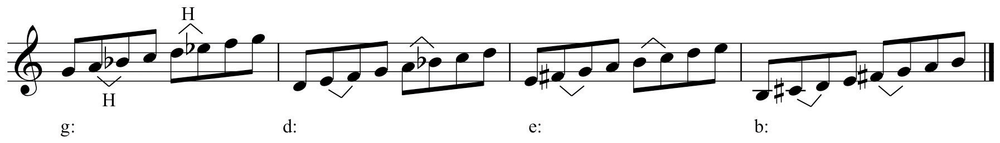The previous examples demonstrate particular relationships between Major and Minor scales:
In order to discover the Relative Major/MinorThe relationship between Major and Minor scales wherein they share the same pitch content but have a different order. relationship, follow this procedure:
To find the Relative Minor scale of any Major scale:
To find the Relative Major scale from any Minor scale:
We do not recommend the “three up or three down” method that is sometimes employed. This leads to confusion on the part of the student. Inevitably, the student will go down the wrong specific pitch distance, or will confuse which relationship is which direction.
In order to discover the Parallel Major/MinorThe relationship between Major and Minor scales wherein they share the same starting pitch but different pitch content. relationship, simply construct major or minor from the same starting pitch.
Relative and Parallel Major/Minor will extend to our discussion of keys in Chapter 4 "Key Sense, Key Signatures, and The Cycle of Fifths".When labeling scales it is customary to use upper case letter names for major and lower case letter names for minor. When hand-drawn, a dash is placed above the letter c only. This should not be used for other lower case letters. These relations commute from each form to the other: one speaks of Major and its relative Minor, or Minor and its relative Major. The same is true for the parallel relationship.
Figure 3.9 Relative and Parallel Scales: Major to Minor and Minor to Major
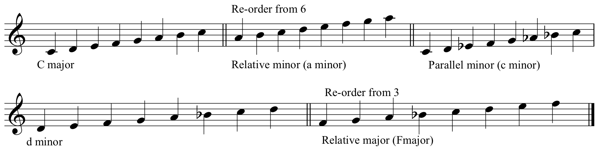Just as the Major scale has labels for its constituent scale-steps, these labels are also used for Minor scales. There is one notable exception: since the distance between scale degree seven and the octave is a whole step, it does not possess the same sensation of required resolution as its major counterpart (the Leading Tone). Therefore it is labeled Subtonic.
Figure 3.10 Minor Scale-Step Labels
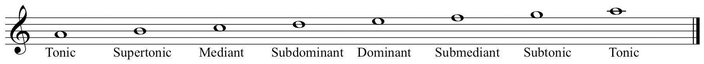Earlier, the Leading Tone was described as the most powerful melodic step that we respond to in terms of demanding resolution. This half step between scale degrees seven and eight is not present in the naturally occurring Minor scale. Beginning with its antecedents in early music, the minor sonority was routinely altered to address this perceived flaw.
Composers chromatically raised the seventh scale degree in minor as a matter of routine in order to provide a more powerful melodic resolution. Additionally, this alteration affected the accompanying harmonies, engendering a more powerful harmonic resolution as well.
This led to an additional, altered form of the minor scale. The original diatonic form of the minor scale is called Natural (or Pure) MinorThe naturally occurring diatonic “parent” version of the Minor scale.. Because of its implied harmonic consequence, the altered version (raised 7, or +7) is called the Harmonic Form of the Minor scale, or simply Harmonic MinorThe most commonly used and expected form of the Minor scale. It is altered from Natural Minor by raising the seventh scale degree to artificially create a Leading Tone..
Figure 3.11 Natural and Harmonic Minor
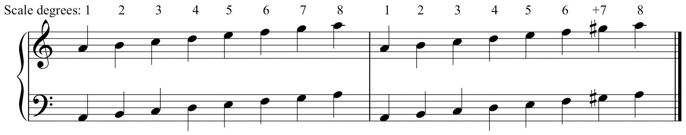The component scale steps for Harmonic minor are:
| ˆ | ˆ | ˆ | ˆ | ˆ | ˆ | ˆ | ˆ | |||||||
| 1 | 2 | 3 | 4 | 5 | 6 | 7 | 8 | |||||||
| W | H | W | W | H | (1 + 1/2) | H |
Observe several properties:
Figure 3.12 Other Examples of Harmonic Minor Scales
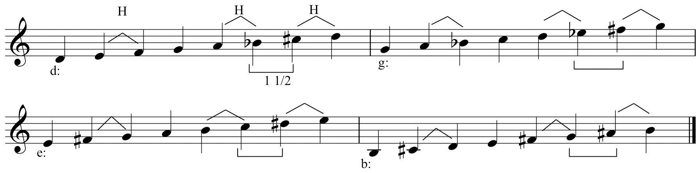This perceived melodic flaw in Harmonic minor, the “step and a half” between scale degrees 6 and 7, was subject to routine alteration as well. In order to eliminate this awkward gap, composers routinely raised the sixth scale degree as well as the seventh. Since this was done to correct the perceived melodic flaw, a third form of the minor scale came to be recognized, called the Melodic Form of the Minor scale, or simply Melodic MinorThe second altered version of the Minor scale. It is altered by raising both the sixth and seventh scale degrees..
Figure 3.13 Natural, Harmonic, and Melodic Minor Scales
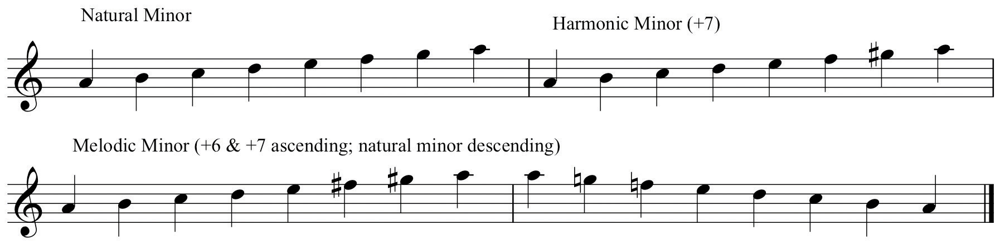The component scale steps for Melodic minor are:
| ˆ | ˆ | ˆ | ˆ | ˆ | ˆ | ˆ | ˆ | |||||||
| 1 | 2 | 3 | 4 | 5 | 6 | 7 | 8 | |||||||
| W | H | W | W | W | W | H |
Observe several properties:
Figure 3.14 Other Examples of Melodic Minor Scales
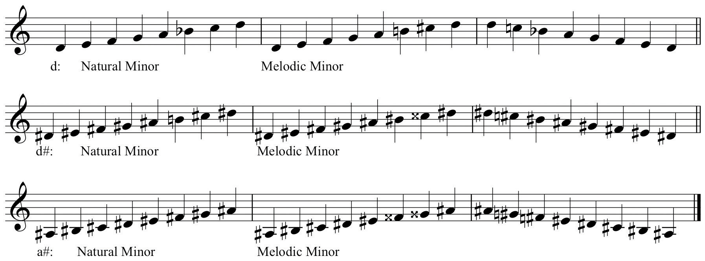Before continuing several very important points must be made:
The three forms have distinct properties:
Composers seemed to require the motion from the Leading Tone to the Tonic. Just as much, they seemed to favor the naturally occurring sixth scale degree, the Submediant, “falling” to the Dominant. In the study of music theory, expect to see, expect to hear, and expect to use the Harmonic form of Minor. The unique properties of the other forms are used sparingly and are subject to conditions for their use.
In summary, major and minor scales form the fundamental source sets, and therefore the basis of the compositional language in Common Practice music. All the great music of the recognized master composers employed these same constructs as the basic elements of their compositional language.
The student should understand:
In your Scale Thesaurus:
In your Scale Thesaurus:
In your Scale Thesaurus: